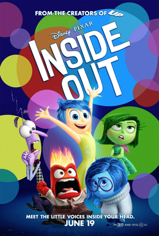
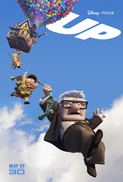

The 20-1 Animation Film Festival
Film Categories
Comedy
Big Hero 6
_poster.jpg)
Big Hero 6 is a 2014 American 3D computer-animated superhero science fiction action film produced by Walt Disney Animation Studios and released by Walt Disney Pictures—the first superhero film in Walt Disney Animated Classic series and the 54th overall. The film is inspired by the Marvel Comics superhero team of the same name. Directed by Don Hall and Chris Williams, the film tells the story of a young robotics prodigy named Hiro Hamada who forms a superhero team to combat a masked villain. The film features the voices of Ryan Potter, Scott Adsit, Daniel Henney, T. J. Miller, Jamie Chung, Damon Wayans, Jr., Génesis Rodríguez, Alan Tudyk, James Cromwell, and Maya Rudolph.
Big Hero 6 is the first Disney animated film to feature Marvel Comics characters, whose parent company was acquired by The Walt Disney Company in 2009. Walt Disney Animation Studios created new software technology to produce the film's animated visuals.
Big Hero 6 premiered at the 27th Tokyo International Film Festival on October 23, 2014, and at the Abu Dhabi Film Festival in 3D on October 31; it was theatrically released in the United States on November 7, 2014. The film was met with both critical and commercial success, grossing over $657 million worldwide and becoming the highest-grossing animated film of 2014. It won the Academy Award for Best Animated Feature and the Kids' Choice Award for Favorite Animated Movie. It also received nominations for the Annie Award for Best Animated Feature, the Golden Globe Award for Best Animated Feature Film, and the BAFTA Award for Best Animated Film. Big Hero 6 was released on DVD and Blu-ray on February 24, 2015.
Director: Don Hall & Chris Williams
Inside out

Inside Out is a 2015 American 3D computer-animated comedy-drama adventure film produced by Pixar Animation Studios and released by Walt Disney Pictures. The film was directed and co-written by Pete Docter, co-directed and co-written by Ronnie del Carmen and produced by Jonas Rivera, with music composed by Michael Giacchino. The film is set in the mind of a young girl named Riley Andersen (Kaitlyn Dias), where five personified emotions—Joy (Amy Poehler), Sadness (Phyllis Smith), Fear (Bill Hader), Anger (Lewis Black), and Disgust (Mindy Kaling)—try to lead her through life as her parents (Diane Lane and Kyle MacLachlan) move the family from Minnesota to San Francisco and she has to adjust to her new life.
Docter first began developing Inside Out in 2009 after noticing changes in his daughter's personality as she grew older. The film's producers consulted numerous psychologists, including Dacher Keltner from the University of California, Berkeley, who helped revise the story by emphasizing the neuropsychological findings that human emotions affect interpersonal relationships and can be significantly moderated by them.
After premiering at the 68th Cannes Film Festival in May, Inside Out was released in North America on June 19, 2015, accompanied by the short film Lava directed by James Ford Murphy. Critics praised the film's concept, poignant subject matter, musical score, and the vocal performances—particularly for Poehler, Smith, and Richard Kind. The film grossed $90.4 million in its first weekend—the highest opening for an original title; it has accumulated over $856 million in worldwide box office revenue. Inside Out has received several awards, including the Golden Globe, Critics' Choice Award, and Annie Award for Best Animated Feature, and has also been nominated at the 88th Academy Awards for Best Animated Feature and Best Original Screenplay.
Director: Pete Docter & Ronnie del Carmen
UP

Up is a 2009 American 3D computer-animated comedy adventure[3] film produced by Pixar and released by Walt Disney Pictures. Directed by Pete Docter, the film centers on an elderly widower named Carl Fredricksen (Ed Asner) and an earnest young Wilderness Explorer named Russell (Jordan Nagai). By tying thousands of balloons to his home, 78-year-old Carl sets out to fulfill his dream to see the wilds of South America and to complete a promise made to his late wife, Ellie. The film was co-directed by Bob Peterson, with music composed by Michael Giacchino.
Docter began working on the story in 2004, which was based on fantasies of escaping from life when it becomes too irritating. He and eleven other Pixar artists spent three days in Venezuela gathering research and inspiration. The designs of the characters were caricatured and stylized considerably, and animators were challenged with creating realistic cloth. The floating house is attached by a varying number between 10,000 and 20,000 balloons in the film's sequences. Up was Pixar's first film to be presented in Disney Digital 3-D.
Up was released on May 29, 2009 and opened the 2009 Cannes Film Festival, becoming the first animated and 3D film to do so.[5] The film became a great financial success, accumulating over $731 million in its theatrical release. Up received universal acclaim, with most reviewers commending the humor and heart of the film. Edward Asner was praised for his portrayal of Carl, and a montage of Carl and his wife Ellie aging together was widely lauded. The film received five Academy Award nominations, including Best Picture, making it the second animated film in history to receive such a nomination (and Pixar's first Best Picture nomination), following Beauty and the Beast (1991)
Director: Pete Docter & Bob Peterson
Wallace and Gromit: a Matter of Loaf and Death

A Matter of Loaf and Death is a 2008 British clay animated murder mystery comedy film created by Nick Park, and the fourth of his shorts and the last to date to star his characters Wallace and Gromit. Released in 2008, it is the first Wallace and Gromit project since the feature film The Curse of the Were-Rabbit in 2005, and the first short since A Close Shave in 1995.
A Matter of Loaf and Death is a mock murder mystery, with Wallace and Gromit starting a new bakery business. When the duo both learn that bakers have been mysteriously murdered, Gromit tries to solve the case before Wallace ends up a victim himself.[5] The short follows the same basic outline as A Close Shave, and, in the film, Wallace falls in love, with disastrous consequences; his love interest is bread enthusiast Piella Bakewell, former advertiser for a local bread firm, but she turns out to be his worst nightmare. Additionally, Gromit falls in love for the first time, as he becomes attached to Piella's downtrodden poodle, Fluffles, who reciprocates his affection.
Director: Nick Park